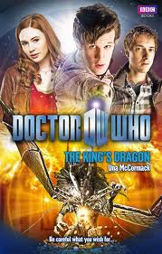

|
The King's Dragon
|
BASIC PLOT DOCTOR COMPANIONS MATERIALISATION CIRCUIT PREPARATORY READING CONTINUITY REFERENCES Pg 20 The psychic paper also makes an appearance (The End of the World et al). But see Continuity Cock-Ups. Pg 52 "Amy looked away, suddenly feeling 7 years old again and knowing that the stranger in the garden with the box of delights was disappointed in her. And then she felt cross with him, not only for leaving that 7-year-old behind after promising to be back, but because he didn't believe her now." The Eleventh Hour. Pg 62 "Although, having seen Leadworth, this could well be the most beautiful thing you've ever seen." The Eleventh Hour. Pg 66 'Even more weirdly than running away with a charismatically chaotic time traveller the night before her wedding." The Eleventh Hour. Pgs 87-88 "'Not a bad way of life. See the sights,move on, see a few more sights -' 'Save the odd Star Whale,' said Amy. 'Fight the odd vampire,' said Rory." The Beast Below, Vampires of Venice. Pg 107 "You're the one with the time machine! I was on my stag night." Vampires of Venice.
Pg 143 "You can't lock us up! He's getting married in the morning!" The Eleventh Hour.
Pg 149 "Oh, and let's not forget the basement in that house in Venice..." Vampires of Venice.
"Or else with a stripper called Lucy?" Vampires of Venice.
Pg 153 "Anyway, I'm not the one that kissed somebody else's girlfriend. Fiancee. Good as wife, actually - it's only a matter of hours." Flesh and Stone, The Eleventh Hour.
"'It's not as if that thing ever works,' Rory said. 'I don't think it does wood.'" Silence in the Library.
Pgs 186-187 "She was 7 years old again, waiting for the man who had said he would come back and take her away, the little girl lost, sitting in the garden waiting for a knight in shining armour who had not returned." The Eleventh Hour.
Pgs 190-191 "He had come back, she thought - just later than he'd said." The Eleventh Hour.
OLD FRIENDS AND OLD ENEMIES NEW FRIENDS AND NEW ENEMIES CONTINUITY COCK-UPS PLUGGING THE HOLES [Fan-wank theorizing of how to fix continuity cock-ups] FEATURED ALIEN RACES Pgs 92/229-230 The Herald emanates waves of golden light, and has bright eyes and black lips (though she may have originally been the same species as above; it's unclear).
FEATURED LOCATIONS IN SUMMARY - Robert Smith? |
|
 |